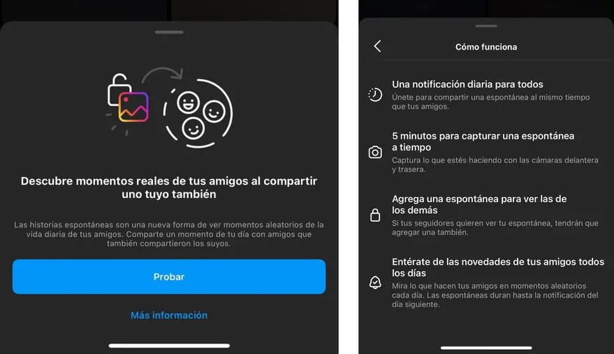

Historias espontáneas: Instagram permite publicar usando ambas cámaras del celular en simultáneo, al estilo BeReal
Instagram activó Historias espontáneas para todos los usuarios; permitirá publicar historias usando al mismo tiempo la cámara principal y la frontal en base a una notificación que dispara la plataforma, la función que define a la red social BeReal
21 de abril de 2023 09:42

Instagram anunció "Historias espontáneas", que insta a publicar usando al mismo tiempo al cámara frontal y trasera del teléfono en un momento determinado del día, una función clásica de la ascendente red social BeReal
Instagram ha introducido una nueva característica llamada Historias espontáneas, que propone el mismo procedimiento que la red social BeReal, en la que los usuarios deben subir una fotografía hecha con la cámara frontal y trasera de manera simultánea tras recibir una notificación. Las historias de Instagram se presentan como “una forma rápida y fácil de compartir momentos y experiencias” que permite compartir texto, música, stickers y GIF con usuarios registrados como ‘seguidores’ en la plataforma. Estas imágenes o videos tienen una duración de 24 horas, se colocan en la parte superior de la interfaz de la red social y se pueden ocultar a los contactos deseados -a través de la configuración de privacidad- así como fijarse en el perfil de la cuenta. La compañía prepara ahora una funcionalidad similar a la que caracteriza a BeReal, otra red social que busca la autenticidad de las fotografías y que cuenta con un sistema de alertas diarias. Tras recibir la notificación, los usuarios disponen de un tiempo limitado para subir una imagen capturada tanto desde la cámara principal como de la selfi.
Instagram presentó una nueva función, "Historias espontáneas", similar a una que ofrece BeReal, con publicaciones hechas con la cámara frontal y trasera del teléfono en simultáneo
Instagram ha tomado esta característica como referencia para sus Historias espontáneas, una herramienta que ya han podido probar algunos usuarios, tal y como ha adelantado el analista y consultor de redes sociales Matt Navarra, que se ha hecho eco de lo compartido por el periodista Diego Poggi. A través de Twitter, ha compartido una captura de la notificación que indica a los usuarios de la red social que es posible utilizar esta funcionalidad, que se presenta como “una nueva forma de ver momentos aleatorios de la vida diaria” de otros contactos. Tras recibir la alerta por parte de Instagram, los usuarios dispondrán de cinco minutos para hacer una captura “a tiempo” de lo que estén haciendo, tanto con la cámara trasera como con la delantera. Para que el resto de usuarios puedan consultar esta instantánea, deberán compartir la suya. En cuanto a su duración, las historias espontáneas se mantendrán en el perfil del usuario hasta la notificación que reciban al día siguiente. Además, los usuarios podrán consultar las suyas propias desde la interfaz principal, a través de una pestaña denominada ‘Espontáneas’, que las diferencia de las historias habituales de la plataforma.